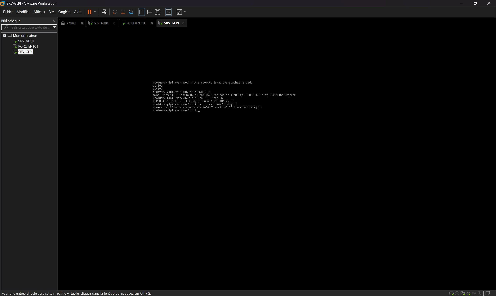
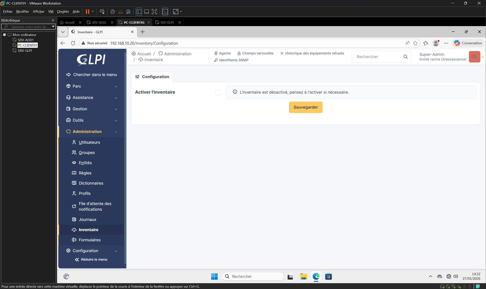
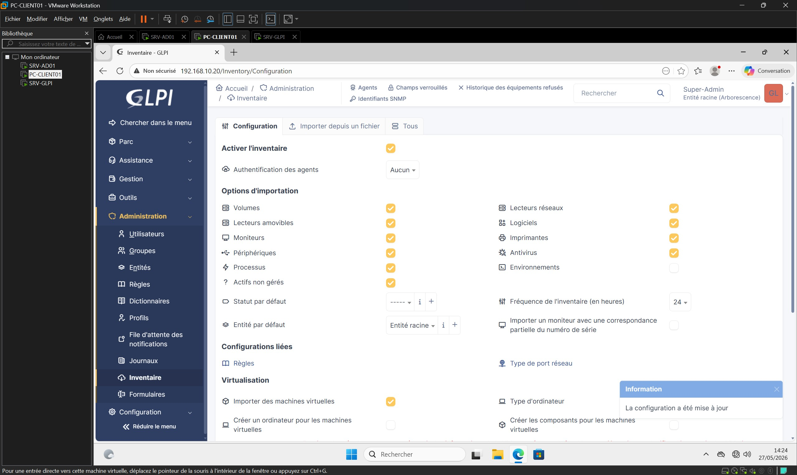
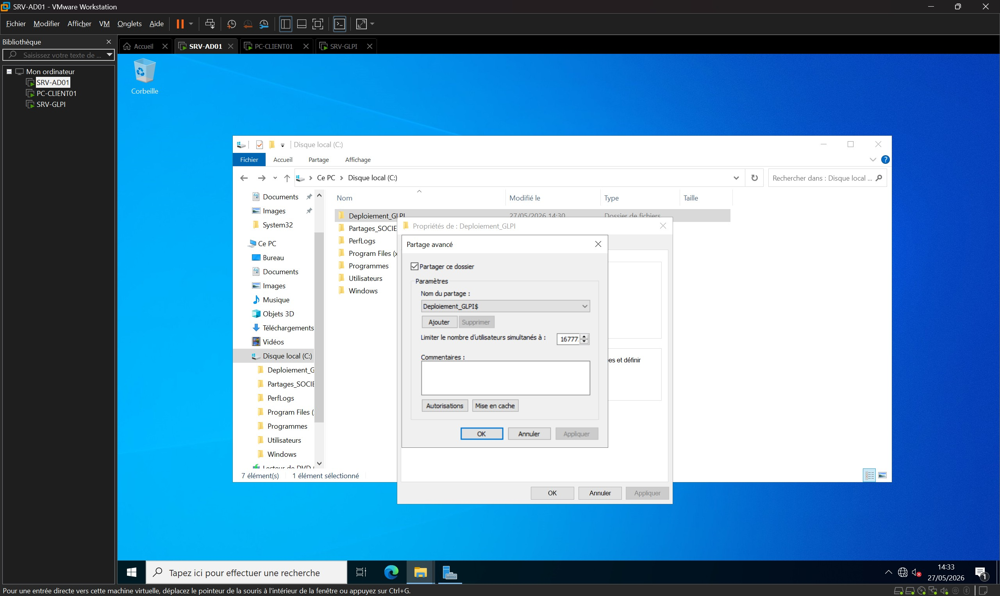
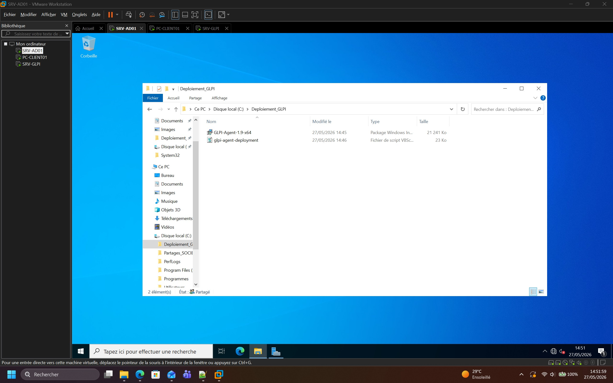
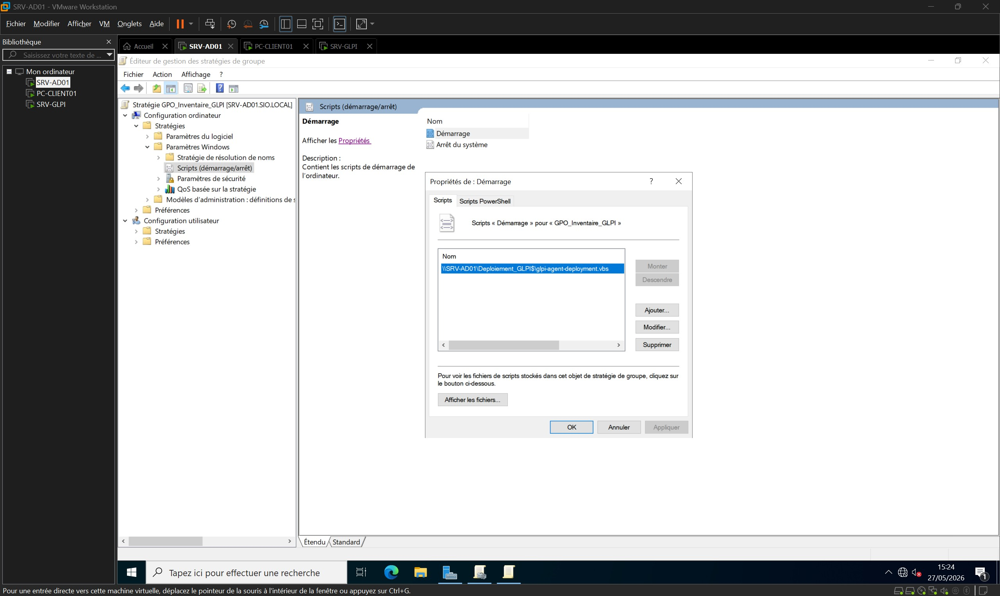
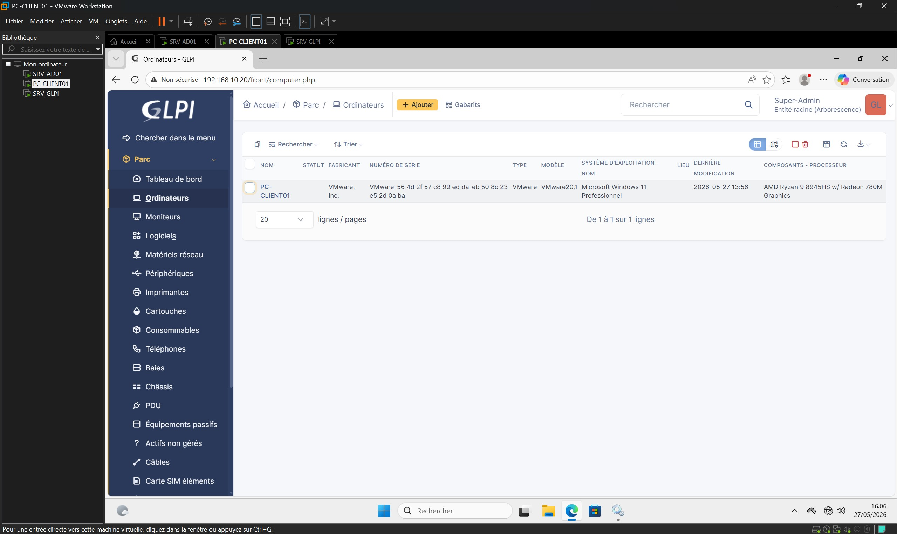

Dans le cadre d'une demande de mon responsable informatique, j'ai réalisé une maquette de pré-production (POC) visant à automatiser la gestion du parc informatique de l'entreprise.
L'objectif était de remplacer un inventaire manuel fastidieux par une solution centralisée basée sur GLPI.
Afin de ne pas perturber la production, ce projet a été mené dans un environnement virtualisé isolé. Le cœur de la mission consistait à configurer l'outil d'inventaire et à déployer silencieusement son agent sur les postes clients via les Stratégies de Groupe (GPO) de l'Active Directory.
Objectifs
Configurer et activer la solution d'inventaire natif sur le serveur GLPI.
Créer un point de distribution réseau masqué pour les fichiers d'installation.
Modifier un script VBS pour un déploiement local et silencieux.
Créer et lier une GPO de démarrage pour automatiser l'installation sur les postes.
Valider la remontée transparente (Zero Touch) des données matérielles et logicielles.
Environnement technique
Hyperviseur : VMware Workstation Pro (Réseau Host-Only)
Serveur d'inventaire : Debian 13.5.0 (SRV-GLPI)
Contrôleur de domaine : Windows Server 2022 (SRV-AD01)
Avant d'entamer les objectifs principaux de la mission, j'ai préparé l'environnement de test (POC).
J'ai déployé une machine virtuelle sous Debian 13 avec une pile LAMP opérationnelle disposant d'une adresse IP statique (192.168.10.20).
J'y ai ensuite installé GLPI 11.0.7 en prenant soin de configurer le serveur web Apache pour qu'il pointe directement vers le sous-répertoire sécurisé /public/ afin de respecter les prérequis stricts de l'éditeur.

Activation de l'inventaire natif
Le socle technique étant prêt, j'ai pu démarrer la mission.
Depuis l'interface d'administration, j'ai activé la réception des données et autorisé l'importation automatique de l'ensemble des composants de la machine (matériels, logiciels, volumes, périphériques) avec une fréquence de rafraîchissement fixée à 24 heures.


Préparation du point de distribution réseau
Pour déployer l'Agent GLPI sans saturer la bande passante Internet de l'entreprise lors du déploiement en masse, j'ai mis en place un point de distribution local sur le contrôleur de domaine Windows Server (SRV-AD01).
J'ai créé un dossier local à la racine du disque C: que j'ai partagé en mode avancé sous le nom Deploiement_GLPI$.
L'ajout du symbole $ à la fin du nom permet de masquer le partage sur le réseau pour les utilisateurs standards.
J'y ai ensuite déposé l'installateur officiel MSI de l'agent (v1.9) ainsi que le script VBS.


Modification du script de déploiement VBS
Le script officiel a nécessité des adaptations pour s'intégrer à mon architecture réseau locale et éviter des erreurs de connexion.
J'ai édité le fichier VBS à l'aide du Bloc-notes pour y modifier trois variables clés :
SetupVersion = "1.9" : Pour correspondre exactement à la version de l'installateur téléchargé.
SetupLocation = "\\SRV-AD01\Deploiement_GLPI$" : Pour forcer l'installation en local via le chemin réseau, évitant un téléchargement lourd depuis Internet.
SetupOptions = "/quiet RUNNOW=1 SERVER='http://192.168.10.20/'" : Ajout du mode silencieux (/quiet), exécution immédiate de l'inventaire (RUNNOW), et ciblage de l'IP du serveur GLPI sécurisé.
Création de la Stratégie de Groupe (GPO)
Pour industrialiser le déploiement de l'agent, j'ai ouvert la console de Gestion des stratégies de groupe afin de créer une nouvelle GPO nommée GPO_Inventaire_GLPI, que j'ai liée à l'Unité d'Organisation (OU) cible.
J'ai édité la stratégie pour ajouter mon script de démarrage en renseignant son chemin UNC complet.

Recette technique côté client
Pour valider le fonctionnement de la stratégie de manière transparente, j'ai redémarré le poste client Windows 11 (PC-CLIENT01).
Une fois la session ouverte, j'ai lancé la console des services locaux (services.msc).
J'ai pu constater que la GPO avait correctement travaillé en arrière-plan : l'agent GLPI a été installé silencieusement, son type de démarrage est configuré en Automatique et son état est bien En cours d'exécution.
Validation de la remontée d'inventaire
Pour clôturer la recette technique de ma maquette, je suis retourné sur l'interface web du serveur GLPI dans la vue des ordinateurs.
Le poste PC-CLIENT01 est instantanément apparu dans la base de données.
En analysant sa fiche technique, j'ai validé que l'agent avait parfaitement extrait et transmis l'ensemble des caractéristiques réelles de la machine : le système d'exploitation exact, le modèle virtuel, ainsi que le processeur physique de l'hôte (AMD Ryzen 9).

Résultats obtenus
Point de distribution réseau masqué et sécurisé fonctionnel sur le contrôleur de domaine.
Script de déploiement optimisé pour une installation 100 % locale et silencieuse.
Stratégie de Groupe (GPO) déployée, fiabilisée contre le démarrage rapide et opérationnelle.
Remontée d'inventaire automatique et transparente réussie depuis un poste Windows 11 vers la solution centralisée GLPI 11.0.7.
Compétences mobilisées
Gérer le patrimoine informatique
Déploiement d'une solution centralisée de gestion de parc et d'inventaire automatisé (ITAM).
Répondre aux incidents et aux demandes d’assistance et d’évolution
Résolution d'anomalies de déploiement réseau en adaptant un script VBS et en corrigeant le comportement de démarrage de Windows 11 via GPO.
Mettre à disposition des utilisateurs un service informatique
Automatisation totale du déploiement de l'agent de manière transparente (Zero Touch) pour les utilisateurs finaux.
Organiser son développement professionnel
Développement d'une expertise sur l'interopérabilité des architectures hybrides (Serveur d'inventaire Linux communicant avec un domaine Microsoft AD).
Bilan personnel
Ce projet m'a permis d'aborder une véritable problématique d'entreprise en appliquant la méthodologie de maquettage (Proof of Concept). Il est essentiel de valider techniquement une solution d'automatisation dans un environnement isolé avant toute mise en production.
J'ai pu me concentrer sur les enjeux de l'administration réseau : économiser la bande passante grâce à un point de distribution local, rendre l'installation totalement invisible pour l'utilisateur, et garantir la fiabilité du déploiement. Les difficultés rencontrées m'ont appris l'importance d'adapter les scripts standards à la réalité de son infrastructure et de maîtriser les subtilités des GPO (comme l'attente du réseau au démarrage).